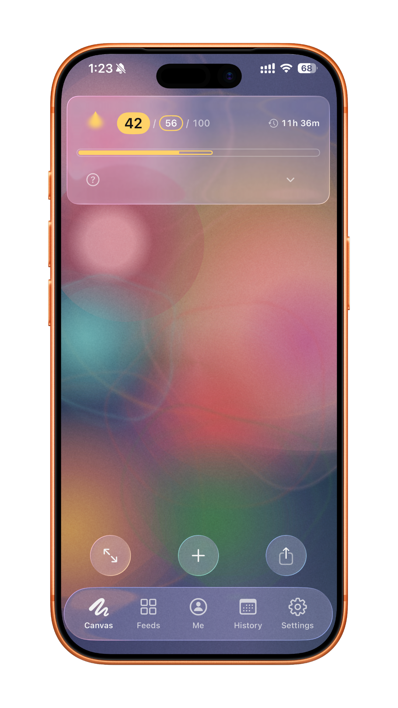
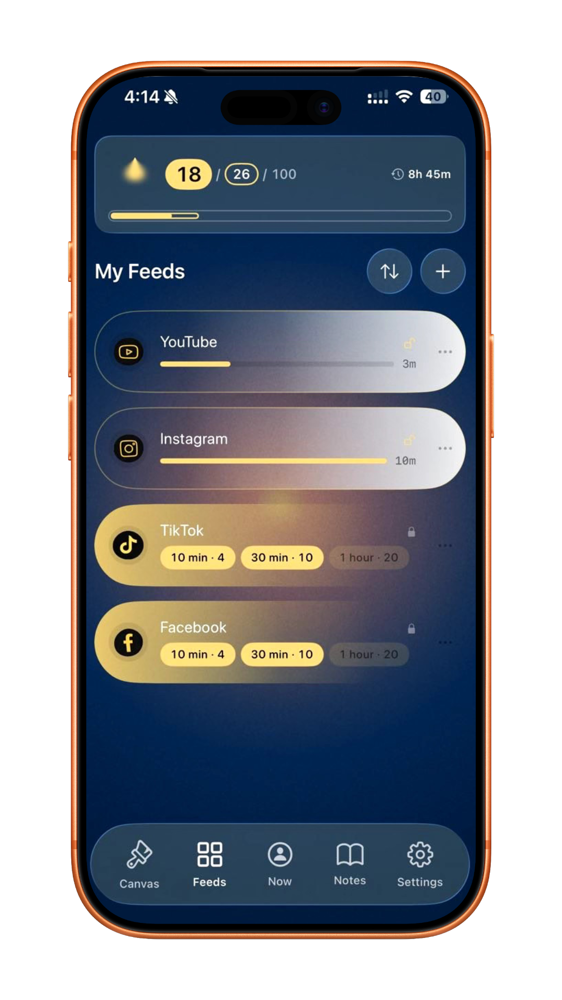
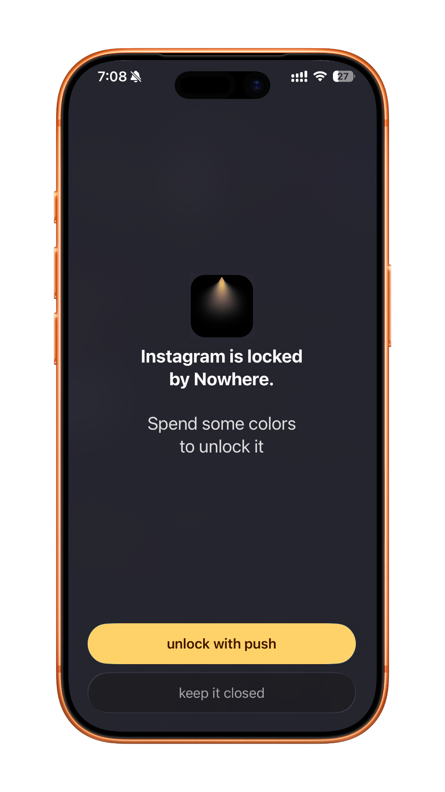
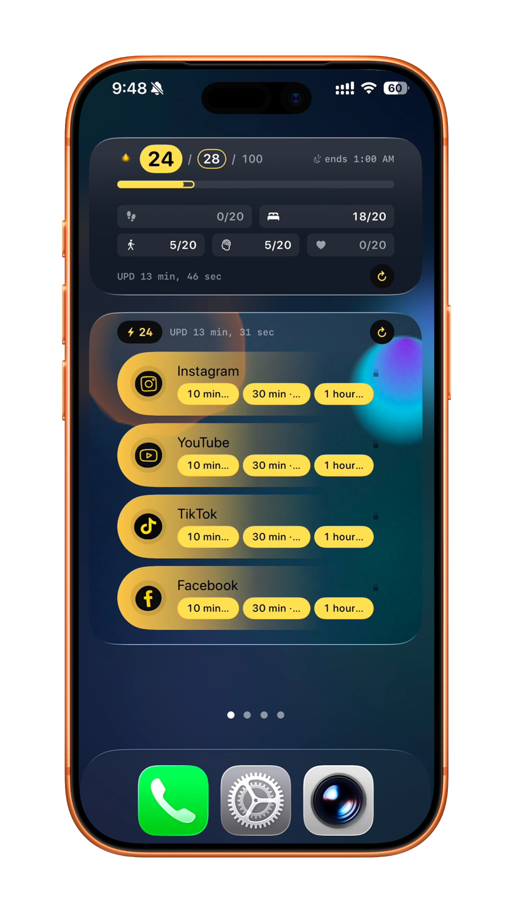
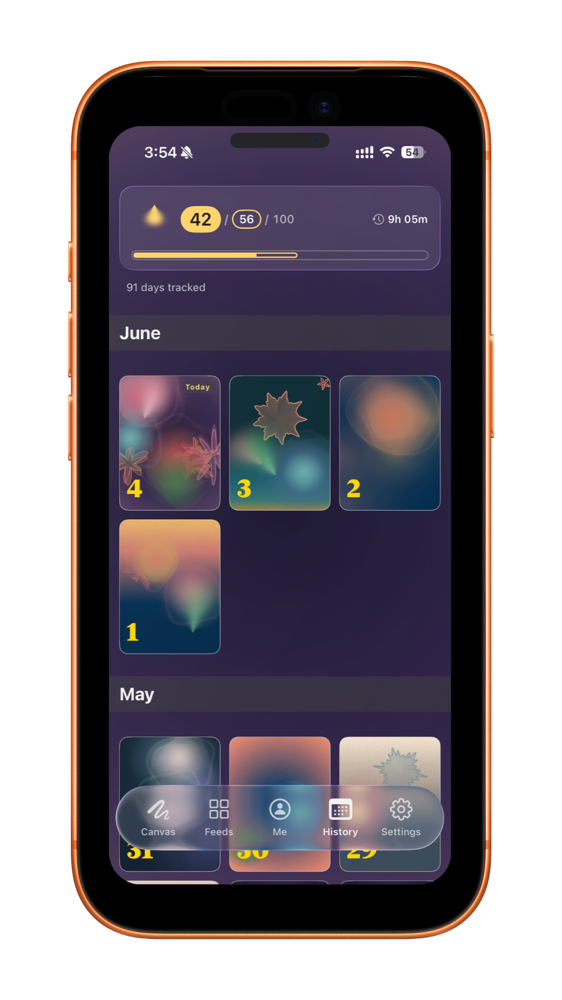

Canvas
your day, in color
your whole day painted as color — steps, sleep, and small wins fill it in.
a screen-time app for ios
a look inside

your whole day painted as color — steps, sleep, and small wins fill it in.

choose which apps to limit and how much screen time you need to use them.

when your screen time for this app runs out, the app gets locked.

check your color balance and unlock feeds right from the home screen.

browse every daily canvas you've painted — one for each day.
Steps, sleep, and one daily choice for your body, mind, and heart fill a pool of up to 100 colors. When you want into Instagram, TikTok, or YouTube, you spend colors to unlock it for 10, 30, or 60 minutes. At the end of your day, the pool resets — nothing rolls over.
from the maker
Hey — I'm Kosta, and I built Nowhere.
I work in front of a screen all day. My days were full, but I could never remember what made any of them mine — I wasn't doomscrolling, just always reaching for the next small hit while the real ones sat right there: a walk, a conversation, the light outside.
I couldn't find a tool that said the thing I needed to hear — not “you're wasting your life on screens,” but “look at everything else that's here.” So I built it.
Nowhere isn't about less screen time. It's about noticing the life sitting right next to it.
— Kosta
see what else I build → pudan.me